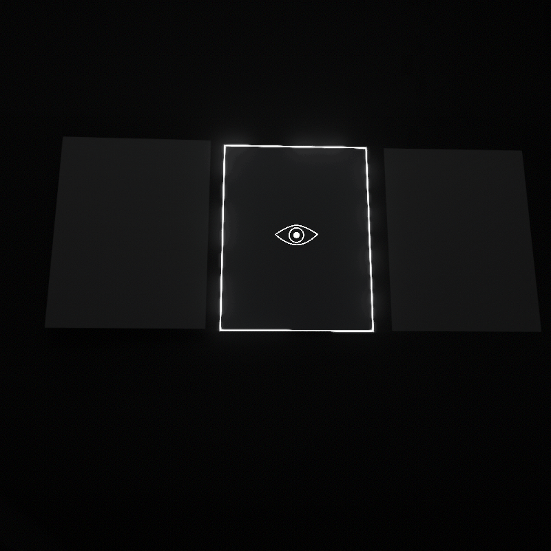
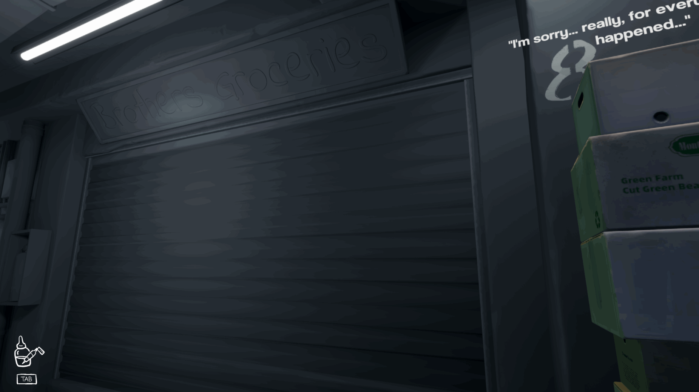
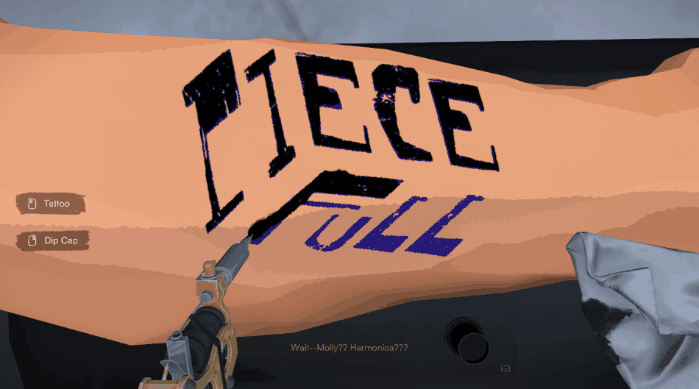

Inkression
A narrative adventure game about a tattoo artist collecting remnants in a dying neighborhood.
Role
Game Designer
Lead Developer
Producer
Tools
Unity FMOD Dialogue System Cinemachine
Events & Awards
New York University Incubator 2024
PlayNYC 2024
Game Devs of Color Expo
2024
GDC
2025
Tokyo Game Show 2025
MAGFEST 2025
Day of the Devs 2025
Coreblazer 2025
Key Contributions
- Designed and implemented core gameplay systems including the tattooing mechanic and save/load architecture
- Designed and implemented context-sensitive interaction feedback systems in Unity, including cursor state changes and object-based affordances for player actions
- Developed gameplay systems supporting exploration, interaction, and narrative progression
- Implemented audio systems using FMOD
- Optimized rendering, occlusion, and code for performance
Features
Wander Through a Dying Neighborhood
Explore Nortown, a once-vibrant community facing demolition, and uncover the stories of its residents through environmental details, conversations, and forgotten remnants of the neighborhood.

Color Revelation
Interact with people, objects, and locations to reveal their true colors and details. This mechanic represents Milly's growing ability to pay attention to the world around her, transforming overlooked elements into meaningful impressions.

Stories Told Through Tattoo
New tattoo designs are created from the impressions you gather throughout Nortown, allowing players to record memories of the neighborhood and its residents before they disappear. Features over 15 characters with unique stories and backgrounds.

Tattooing
Work at The Blindfolded tattoo shop and create tattoos for clients through an interactive tattooing mechanic. Each session offers opportunities to learn more about residents through conversations and personal stories.
